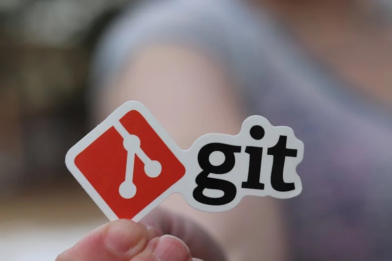

What is Git?
Git is a distributed version control system designed to track changes in source code during software
development. Created by Linus Torvalds in 2005, Git allows multiple developers to work on a project
simultaneously without overwriting each other's contributions. It stores data in snapshots and enables
easy
collaboration, branch creation, and change history tracking.
Read More
Why do developers need Git?
Developers need Git to efficiently manage, track, and collaborate on software projects. Git provides
version control, allowing teams to work on the same project without conflicts, roll back to previous
versions, and maintain a clear project history. It supports branching and merging, enabling developers
to work on different features simultaneously while ensuring code stability.
Read More
What is a branch in Git?
A branch in Git is a separate line of development, allowing developers to work on new features, bug
fixes, or experiments without affecting the main project. Branching enables parallel development, keeps
the main codebase stable, and simplifies merging changes back into the main branch once work is
complete.
Read More